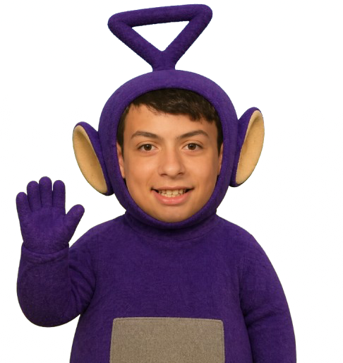

You're growing a tree where every branch is both the map and the upgrade screen. Sap flows from the leaves down through the trunk to a Core — what you spend to grow more.
Tip: tap the 🔓 lock on any node's panel to protect it from accidental upgrades or pruning. Drag to pan, pinch or scroll to zoom.

Slot a tree-god into each pedestal. Their blessings and banes apply globally, every tree, until removed.
Fell a grown tree to gather rings from its trunk — then spend them on eternal upgrades and choose what species to plant next. Rings and upgrades are kept forever.